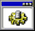
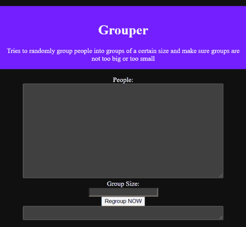
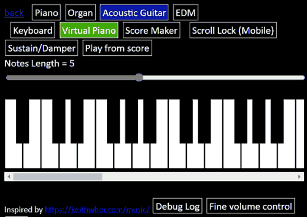
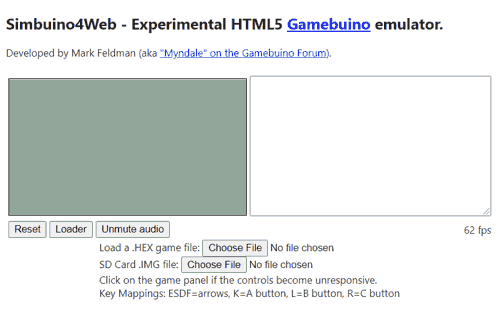
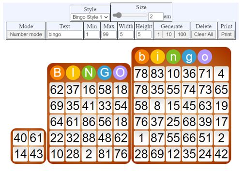
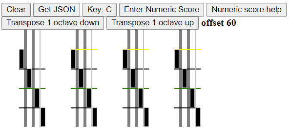

Github Pages - Apps
Github Repository
Hi, I'm Yong En
I am often fascinated by how computers work.
I enjoy using the understanding of different systems to solve problems and help others.
Programming languages I am proficient in
Batch Scripting
VBScript
VB.NET
C#
C++
HTML
Javascript
My Projects
Grouper
Created because my class wanted to group ourselves randomly

Repository
•
Try now in Github Pages
Javascript Synthesizer
Play piano from your web browser

Repository
•
Try now in Github Pages
Patched version of Myndale/Simbuino, a MAKERbuino emulator
Emulate the MAKERbuino from your web browser!

Repository
•
Try now in Github Pages
Javascript Bingo Generator
Generate customizable sheets to play Bingo

Repository
•
Try now in Github Pages
Piano roll musical scores
A new way of creating musical scores?

Repository
•
Try now in Github Pages
SG Bus Arrival Time
Get bus arrival time in Singapore
Repository
MAKERbuino square wave generator
Manipulate the timer prescaler and value exactly to get a precise frequency
Repository
My Arduino MIDI Library
A library to parse MIDI data
Repository
My Arduino Sound Library
Play many channels simultaneously
Repository
MAKERbuino SD Card File Explorer
A file explorer for the MAKERbuino
Repository
MAKERbuino MIDI File Player
Play MIDI files from MAKERbuino
Repository
 Github Pages - Apps
Github Repository
Github Pages - Apps
Github Repository